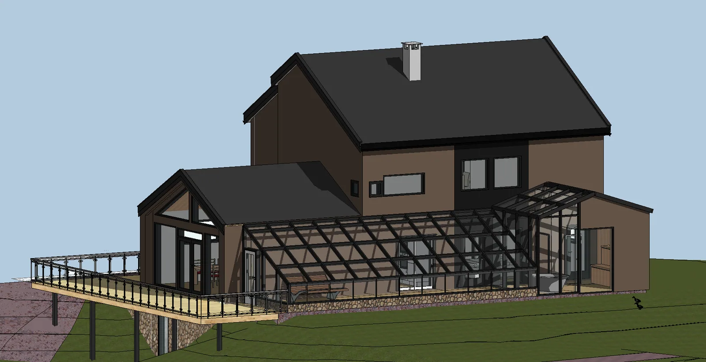
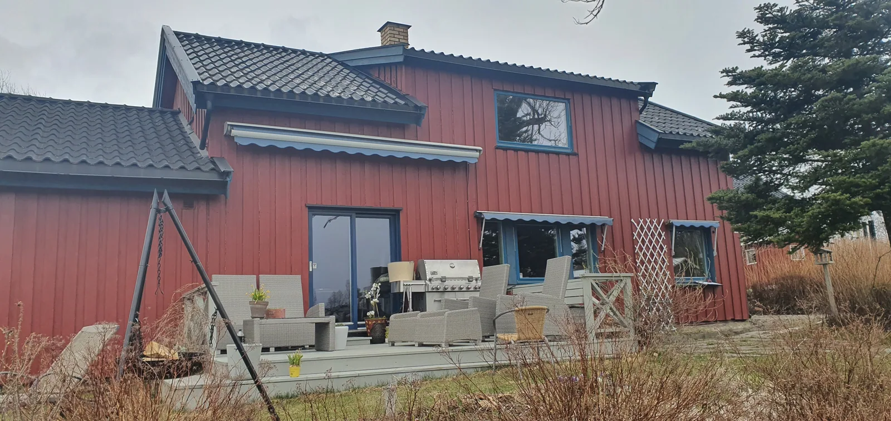
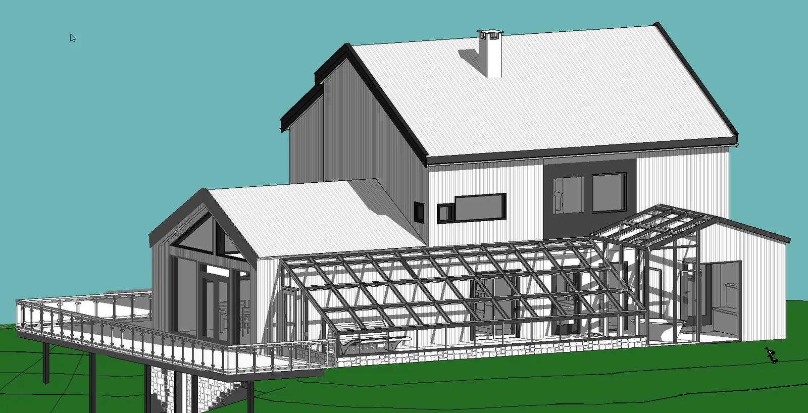
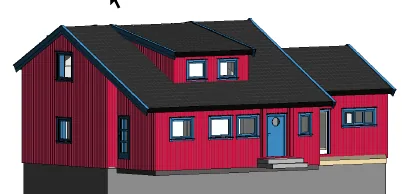
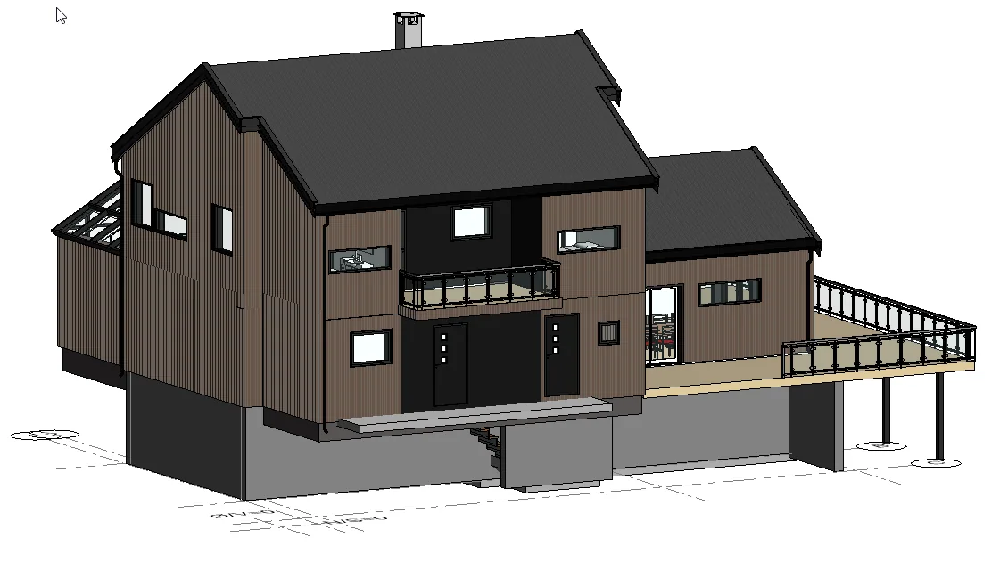

Et kjent hus. Nye muligheter.
En helhetlig ombygging med ny boenhet, orangeri og badstue.

Lillero i Lillestrøm
Utgangspunktet var en bolig i halvannen etasje med takoppløft. Familien ønsket blant annet en egen boenhet i andre etasje, et orangeri og en badstue med store glassflater. Eksisterende og planlagte fasader ble dokumentert som del av byggesøknaden.
- Prosjekt
- Lillero
- Omfang
- Totalombygging
- Underlag
- Eksisterende og nye fasader
Prosjektet i bilder.



Åpne hele bildet

Åpne hele bildet

Åpne hele bildet

Åpne hele bildetStore planer?
Start med en samtale.
Den første samtalen er gratis og uforpliktende.
Fortell oss om ideen din, så tar vi det derfra.